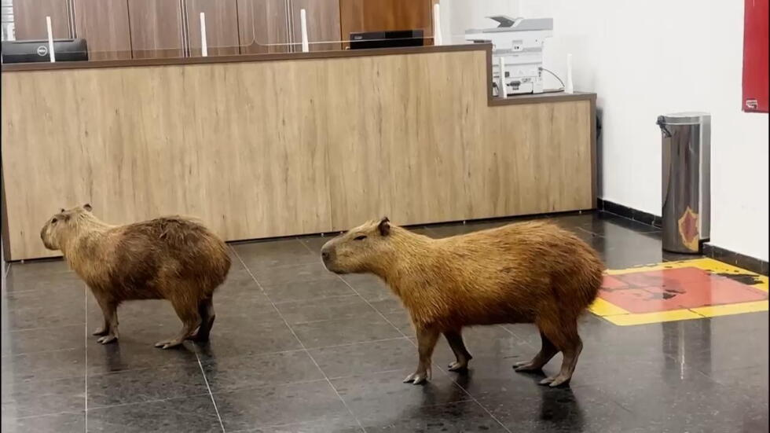

Capybaras enter Brazil's Mato Grosso State Legislative Assembly during a voting session
2026, July 30

Capybaras enter Brazil's Mato Grosso State Legislative Assembly during a voting session
2026, July 30
Brazil
A group of capybaras became the unexpected stars of Brazil's Mato Grosso State Legislative Assembly after casually wandering into the building during a voting session in Cuiabá on July 30. The animals strolled through the entrance while lawmakers prepared to vote, briefly stealing the spotlight before being gently ushered back outside.The capybaras didn't cause any disruption or damage. Legislative staff member Nayara Bueno, who filmed the encounter, said the animals are actually familiar visitors.
'They show up here quite often, so we've gotten used to seeing them.'
Their appearances are explained by geography: the legislature building sits beside a park rich in wildlife, making it easy for the semi-aquatic rodents to wander onto the grounds.
Capybaras are the world's largest rodents, reaching weights of up to 80 kg (175 lb). Native to South America, they are highly social animals that live near rivers, lakes, and wetlands. Their famously calm temperament has made them internet celebrities in recent years, spawning countless memes and videos celebrating their seemingly unbothered attitude.
The incident has delighted people around the world, with many joking that the capybaras were simply 'attending parliament' or conducting their own inspection of the legislature—living up to their reputation as some of nature's most relaxed animals.